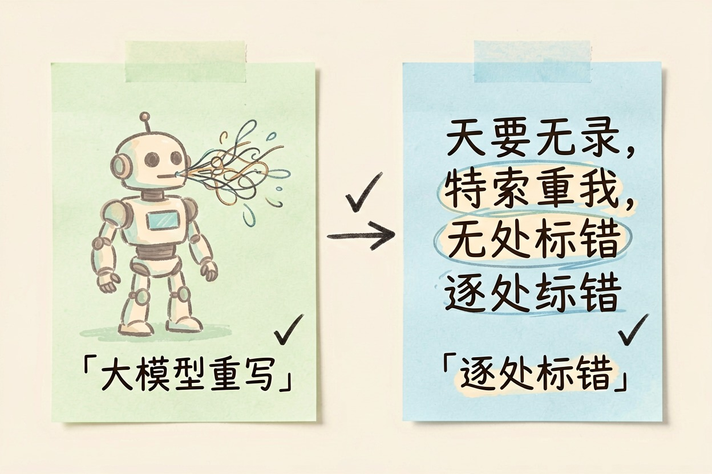
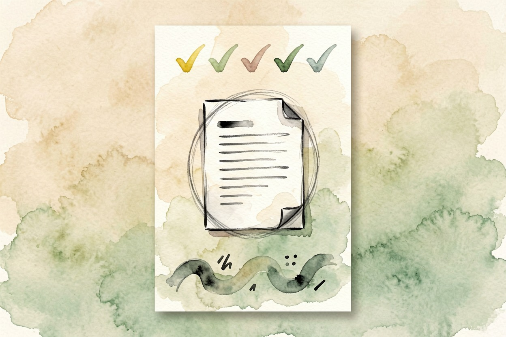

秘塔写作猫怎么样？专校对比与 30 秒自测
改稿最怕两件事：大模型顺手把你的意思改没了，和错处标得你无从下手。
秘塔写作猫怎么样？先说它是什么

秘塔写作猫怎么样，先讲清定位：它是校对工具，干的是挑错，不是代写。你把一段文字粘进去，它标出错别字、语病、标点问题，给出修改建议，你逐条接受或拒绝。这和大模型「我帮你重写一遍」是两条路。
专校比丢给大模型强在哪
把稿子丢给通用大模型改，常见三个坑。它爱大改结构。它顺手加自己编的内容。它还把你的原意磨平。秘塔这类专用工具相反，只在原句上标错，保留你的结构和事实，你说了算。改完要发的东西尤其如此。逐条过比一键接受大模型重写安全，至少你清楚每一处动了什么。长文校对比丢给AI 写作工具对比里的大模型更稳。公众号推文、投标书这种改完就要发出去的稿子，走这条路最合适。
它值不值付费，看你的稿量：一周就改两三篇短稿，免费档够用；天天要过整篇长文、还要查语气和敏感词，付费档省下的时间才值得。想去掉 AI 生成痕迹，它不是干这个的，那是另一类工具的事，去除 AI 腔调有专门讲法。
30 秒自测法
不看出长文案，自己粘一段就知深浅。照这三步：
- 写一句有错别字的话，看它能不能标出来。
- 写一句通顺但有语病的长句，看建议合不合理。
- 写一段带中英文混排的，看标点处理是否到位。
再加一步，把一段最近要发的真实文案贴进去，看建议能直接用，还是要反复返工。
三步跑完，心里就有数了。它能标出来的多是硬错；语感和节奏这类问题，它基本不碰。
测试素材：
1. 一句含错别字的话（如「再接再励」）
2. 一句语病长句（成分残缺、搭配不当各来一句）
3. 一段中英文混排（如「PR 和运营的 KPI 需要对齐」）
把这三样贴进去，十分钟能看出它的判断准不准具体额度和会员价格网上说法很乱，以登录后界面显示为准，别信二手搬运的数字。更多用法翻它的帮助中心。
短板和适用边界
它改不了内容质量，只管表达正确。逻辑乱、事实错，它发现不了。它也不是万能校对。古诗文、专业术语偶尔会误判。看到建议先想一句合不合语境，改完把改动多的地方读一遍。和 Word 自带拼写检查比，它对语病和上下文的理解更深；但学术场景的查重、引用格式它不做，那要交给专门的论文工具。写论文的同学用它过语言关合适，但结构和论证还得自己来，AI 论文写作指南能补这块。入口在秘塔写作猫官网，注册即可试。
秘塔写作猫怎么样，一句话：它不替你写，只帮你改。长文校对比丢给通用大模型更可控，逐处标错、自己决定留删。别把改稿全权交给任何工具，重要文档过一遍人工复核更稳。秘塔写作猫怎么样，开个网页粘一段试试就知道。

本文信息核对于 2026-08-05。AI 产品的价格、免费额度与功能变动频繁，实际以各工具官网当前说明为准。